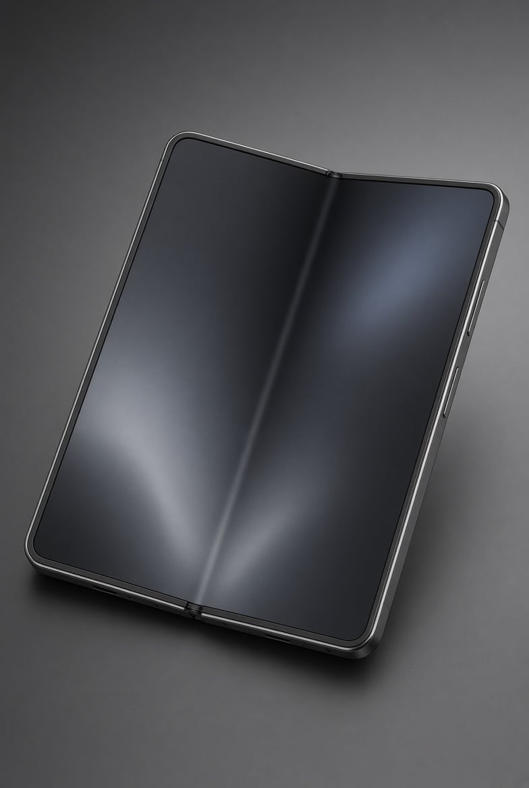

접는 폰들도 마찬가지인듯
내부액정 2년이상 버틴폰들을 못봄

접는 폰들도 마찬가지인듯
내부액정 2년이상 버틴폰들을 못봄
폴드5 아직까진 괜찮다 만3년째인데...
폴드5가 명기인가요?
꼭 그렇지만도 않은거같음 7 좋아보이던데 훨씬 얇고
나랑 아버지는 비슷한 시기인 3년째에 뽀각하더라 ㅋㅋㅋ
수리비듣고 아버지는 기겁하시며 바형으로 회귀 ㅠ
근데 나는 플립3 쓸 때 거의 딱 3~5개월마다 한번씩 AS센터갔음. 그쯤 되니까 항상 가운데 접히는 부분에 크랙이 생기더라고. 근데 갈 때마다 외부 충격으로 인한게 아닌 듯하다고 무상으로 수리받음. 근데 이게 액정 모듈만 따로 나오지 않는다며 배터리랑 프레임까지 싹 새걸로 바꿔줬었음.
그렇게 3년 정도 썼는데 다섯번짼가? 여섯번째 가니까 이제 무상 처리가 어려울 수 있다고 하길래 플립6으로 갈아탐. 갈아탄 이후엔 액정에 크랙이 생기는 일도 없어서 as 받으러 간 적도 없음.
결론 : 폴드는 모르겠고 플립은 플립3때까진 분명 충격 없이도 크랙이 좀 있었다.
그런 경험을 하고도 폴더블을 계속 쓰다니 좋긴 좋나보네 플립은 폴더보다 닫고 여는 빈도가 훨씬 잦아서 더 빨리 망가질 것 같다는 생각이 듦
그럴 수도? 내구성 이슈가 분명 있었다는건 사실임. 근데 나는 일단 무상으로 싹 다 바꿔주니까 걍 반년에 한번씩 새폰으로 바꾼다는 기분으로 써서 괜찮았음 ㅋㅋㅋ
폴드8 첨 써보는데 정말 좋음
다음도 접는 폰으로 갈 거 같음
플립3가 유독 약했음 나도 그랬고 와이프도 그랬고 그래서 난 폴드씀
괜찮은데 뭔소리여
폴드5 아직 잘만 살아있음
생존자(고장) 편향이구만, 잘쓰는 사람은 볼 일이 없나봄
짭수는 요즘 안 터져
s23 노말 -> 폴드8 울트라 1tb 로 바꿨는데 지금까지는 넘 좋음 속도 크기 전화받는 착용(?)감 다 좋았음
플라스틱이 노후되면 건조하고 갈라지듯
세월을 많이 타는듯
보험들고 수리하면 그만이야~~~
이런 개좆빠는소리를 아직도하네 5~6부터는 집어던져도 잘 안깨고 3년4년써도 내부액정 멀쩡한데
폴드는 유독 이딴 신포도질이 아직도 많냐 ㅋㅋ
플립5 쓰는딩 개말짱함 하도 샤워할때 물로 박박 닦아서그랫나 한번 폰 맛탱이갓길래 센터갓는데 거의뭐 새폰으로 한번 무료로 통으로 갈아줌 그뒤론 씻을때 안들고감...
플립 5산지 1주일만에 깨먹고 그뒤로 만 2년넘었는데 내부 액정 멀쩡함 잘만씀
출시되고 추울때 샀으니까 곧 3년되는데 잘만씀
써보고 병신같아서안삼 서비스도 좆같고
액정(아님), 2년써도 멀정함.
실사용자 맞음?
폴드6부터는 다 괜찮지 않나 ㅋㅋㅋㅋ
얼마나 폰을 그지같이쓰면 그럴수있지?
폴드로 탁구라도 치고다임? 이게 어캐고장나ㅋㅋㅋㅋㅋ
잘쓰고있는디?
잘 쓰다가 어느 순간 걍 깨짐..
조심해라...
어찌 아냐고?
나도 모르고싶었다 ㅅㅂ
플립1부터 계속 플립쓰는데 액장 안깨짐
거의 무조건임 ㅇㅇ
시간 지나면 유연한 플라스틱도 무조건 경화 돼가지고
케바케지 뭐..
난 폴드2 3년
폴드5 3년 넘게 잘 쓰고 있음
커스텀수냉 사용 15년차 단한번의 누수도없었음
아 나는 언제터져보나~
혹시 현장일하는사람들 폴드 액정 괜찮음??? 쇳가루 날아다니는 현장인데 주머니에 잇다해도 불안하다
2년까진 괜찮은데 3년 반정도는 대략 7~80%로 망가지더라
폴5 거진 3년 썼는데 이상없었음. 지금은 폴8로 넘어옴 대만족중